LECTURE 7
Reading & Implementing Research Papers
From a PDF to working PyTorch: Attention, the Transformer, U-Net, ResNet and the Vision Transformer
How to read a paper · Google Colab & Cursor step by step · build 4 landmark papers from scratch · Lab 7 & the Paper Implementation Challenge
Dr. Muhammad Kazim
Department of Intelligent Systems
University of Lahore
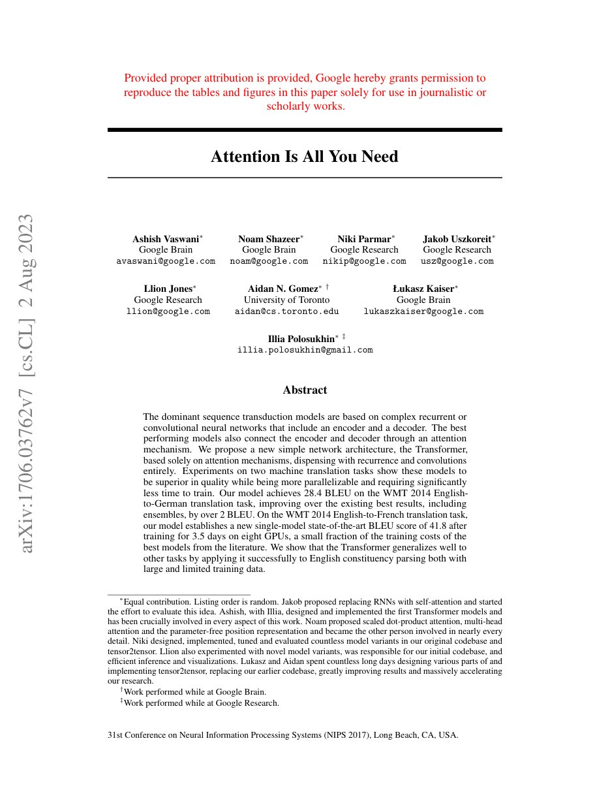
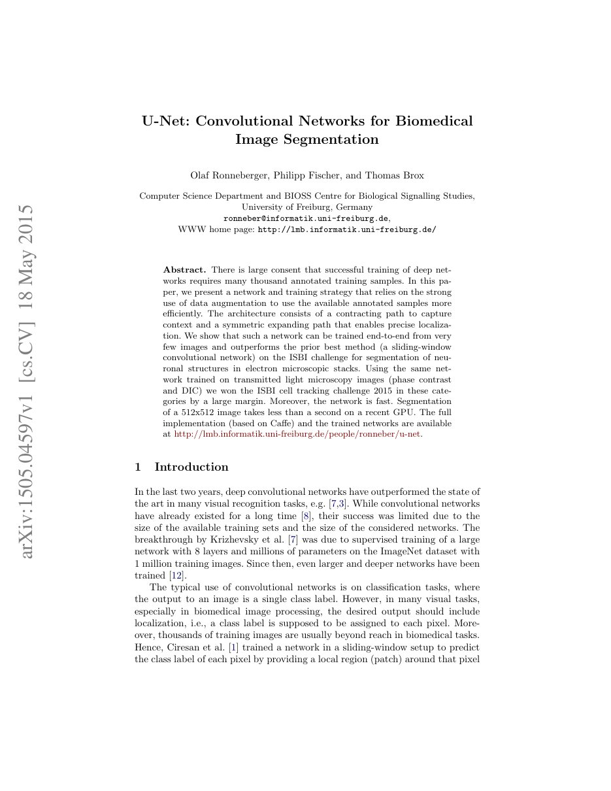
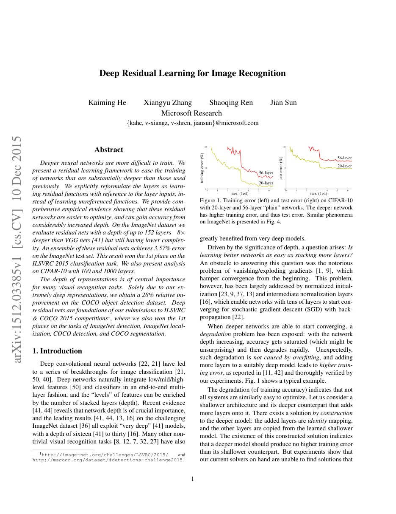
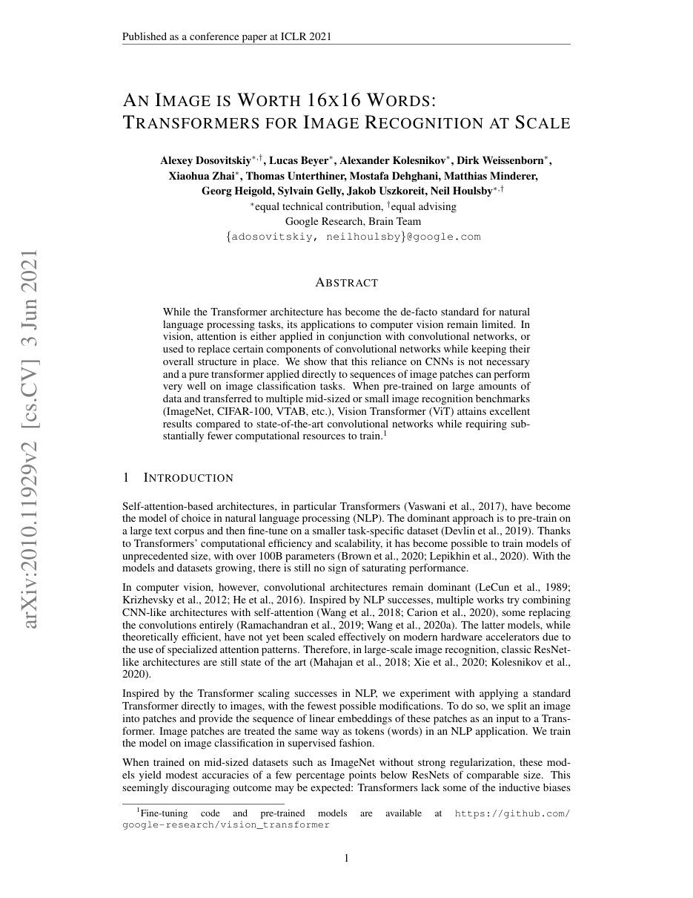
Four papers, ≈ 500 000 citations together, and you will build all four from scratch today.
Where we are
…but the deep models are black boxes: you call model(x) and hope.
Why this matters: every model you will ever use started as a PDF. Engineers who can read the PDF can fix, adapt and trust the model, and they get the MSc places and the jobs.
By the end of this lecture and Lab 7 you should be able to:
For the teacher and the student
| Level | Topic | Time | Hands-on |
|---|---|---|---|
| 0 | What is a research paper? | 10 min | quiz |
| 1 | How to read a paper | 20 min | paper anatomy demo · read 3 abstracts |
| 2 | Tools: find, read, run (Colab, Cursor) | 15 min | open Lab 7A in both |
| 3 | PyTorch you need | 15 min | conv calculator · 7A |
| 4 | Paper 1: Attention Is All You Need | 40 min | attention & PE demos · 7B, 7C |
| 5 | Paper 2: U-Net | 25 min | shape tracer · 7D |
| 6 | Paper 3: ResNet | 15 min | 7E |
| 7 | Paper 4: Vision Transformer | 15 min | patchify demo · 7F |
| 8 | Advanced: your next paper, research | pick | 7G bug hunt · 7H challenge |
Students: every level ends with a quiz; 🖐 boxes are things to try now; ▶ buttons open the matching Colab notebook. You do not need a GPU: every lab runs on a free Colab CPU in a few minutes.
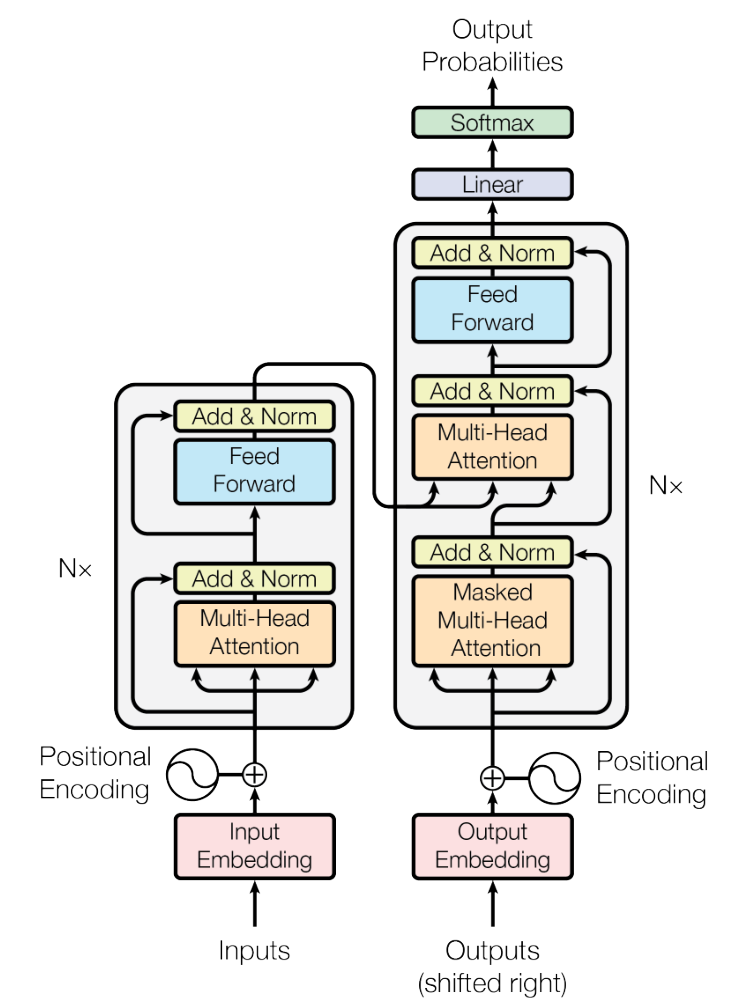
Vaswani et al., 2017
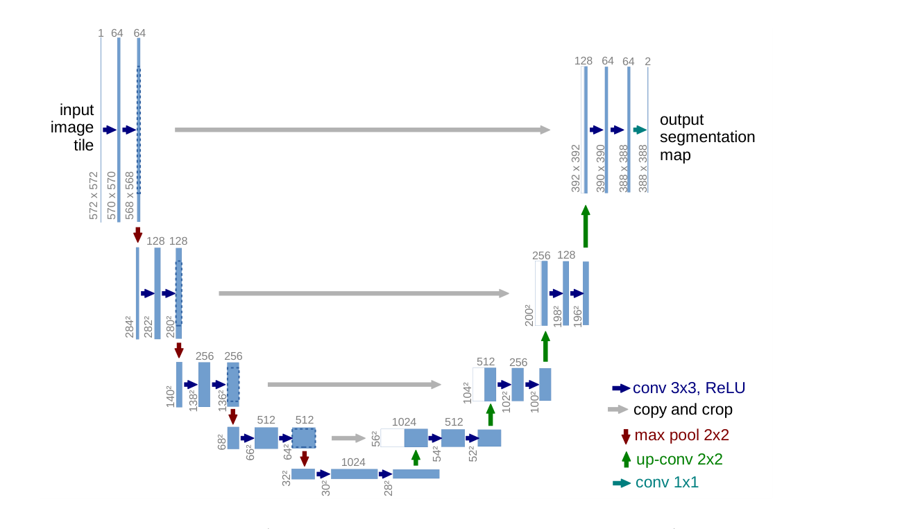
Ronneberger et al., 2015
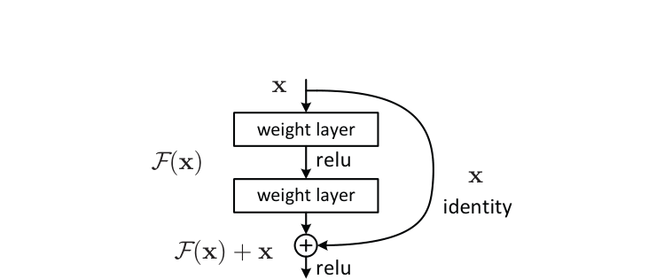
He et al., 2016
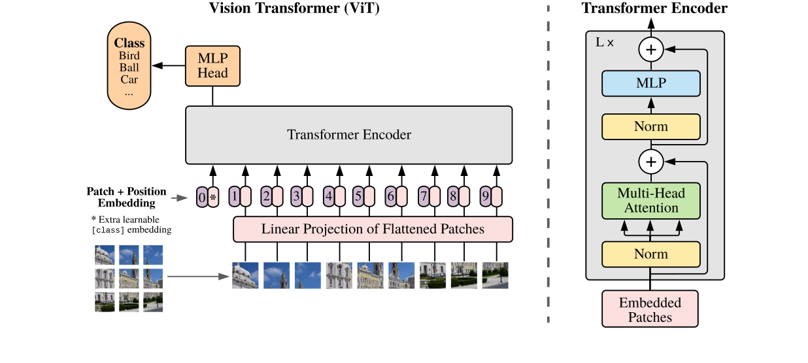
Dosovitskiy et al., 2021
The big picture first
📖
Not front to back! Abstract, figures, conclusion first. Then the method. Write a one-page card: problem, idea, figure, equations, shapes.
🧱
One box of the figure = one PyTorch class. Build the smallest box first and test it (shape, a value you can compute by hand, the parameter count) before the next.
🔬
Overfit one batch, then a small experiment that tests the paper's main claim, with an ablation. Report honestly what matched and what didn't.
Analogy: a paper is a recipe written by a chef for other chefs. It skips "obvious" steps, uses jargon, and the photo (the figure) is the most useful part. You don't read it once and cook the whole banquet: you read it, cook one dish at a time, taste after every step, and compare with the photo.
| Word | Means | Everyday picture |
|---|---|---|
| Preprint / arXiv | a paper posted online before (or without) peer review; free | a draft shared with friends |
| Peer review, venue | experts check the paper; accepted papers appear at a conference (CVPR, ICCV, NeurIPS…) or journal | an exam marked by other teachers |
| Baseline · SOTA | the method you compare against · "state of the art", the best known result | last year's champion |
| Ablation | remove one part of the model and measure the drop: proves the part matters | cook without salt to see what salt does |
| Benchmark | a fixed dataset + metric everyone reports (ImageNet top-1, COCO mAP, Dice) | the same exam for every school |
| Hyper-parameter | a number you choose, not learned (learning rate, layers, heads, patch size) | oven temperature |
| Reproduce · replicate | get the paper's result with their code · with your own code | cook the recipe yourself |
| Tensor shape | the size of every axis, e.g. (B, C, H, W) = (8, 3, 224, 224) | the size of every box in the kitchen |
0
What is a research paper?
Level 0 · where papers come from, which ones matter for vision, and why we implement them
Level 0 · step 1
In plain words: in computer vision the newest ideas appear on arXiv first (free, anyone can read them), then at conferences. Most important papers come with code. The best ones end up inside products within 1–3 years.
Level 0 · step 2
Level 0 · step 3
"What I cannot create, I do not understand."
Richard Feynman, written on his blackboard (1988)
You will not understand a paper fully on the first read. Nobody does, not even professors. Researchers read a paper several times and understand it by building it.
🖐 Try it: open arxiv.org/abs/1505.04597 on your phone. How many pages is U-Net? (8.) How many pages is the architecture description? (Half a page!)
Answer out loud, then click
1
How to read a research paper
Level 1 · anatomy of a paper, the three-pass method, and three worked examples
Level 1 · step 1 · live demo
Click a part of the paper.
Level 1 · step 2
Read: title, abstract, introduction, section headings, all figures, conclusion. Skip the maths.
Answer the 5 Cs: Category (what kind of paper?), Context (built on which papers?), Correctness (do the assumptions look valid?), Contributions (what is new?), Clarity (well written?)
Decide: keep reading or not?
Read the method carefully, but skip proofs. Study every figure, axis and table. Mark the terms and references you don't know.
Output: a summary in your own words, the architecture drawn by hand, a shape table, the key equations.
Enough to explain the paper to a friend.
Virtually re-implement it: make the same assumptions and rebuild the work in your head, then compare. Every detail counts: padding, bias, axis, initialisation, learning rate.
For us, pass 3 = writing the code. That is what Lab 7 does.
Free PDF: S. Keshav, "How to Read a Paper", ACM SIGCOMM CCR 37(3), 2007 (two pages, read it tonight).
Level 1 · step 3
After Keshav (2007) and Andrew Ng's advice on reading papers (Stanford CS230, 2019).
Level 1 · worked example 1 · pass 1 only
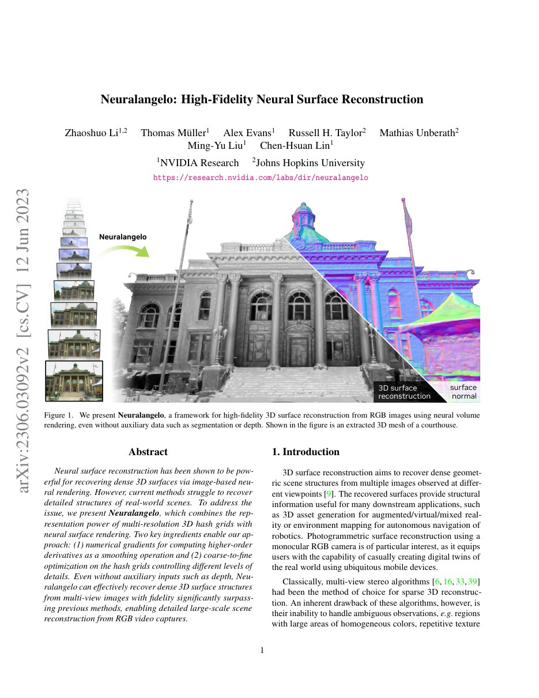
| Pass-1 card (10 minutes) | |
|---|---|
| Category | 3-D reconstruction from video (neural surface reconstruction) |
| Context | NeRF, NeuS (SDF surfaces), Instant-NGP (multi-resolution hash grids) |
| Input → output | RGB video of an object/scene (+ camera poses) → detailed 3-D surface mesh |
| New idea | hash-grid SDF + numerical gradients + coarse-to-fine training → fine detail |
| Evidence | DTU and Tanks & Temples benchmarks, big improvement over NeuS |
| Implement? | ❌ not in this course: needs camera poses (COLMAP), CUDA hash grids and many GPU-hours per scene. ✔ But we understood it in 10 minutes. |
Z. Li et al., arXiv:2306.03092 · project page · code
Lesson: pass 1 is also for saying no. Most papers you read you will not implement. Choose papers whose compute and data you can afford.
Level 1 · worked example 2
| Pass-1 card | |
|---|---|
| Category | new architecture for sequence-to-sequence (machine translation) |
| Problem | RNNs read one word at a time: slow to train, forget long-range context |
| New idea | only attention, no recurrence, no convolution → everything in parallel |
| Core figure / equation | Figure 1 (encoder–decoder), Eq. 1: softmax(QKᵀ/√dk)V |
| Evidence | WMT 2014 BLEU 28.4 (EN→DE), 41.8 (EN→FR): new SOTA at a fraction of the training cost (big model: 3.5 days on 8 P100 GPUs) |
| Implement? | ✔ the architecture: yes, small (Lab 7C). The full translation model: big data + GPU days. |
A. Vaswani et al., NeurIPS 2017 · arXiv:1706.03762
Level 1 · worked example 3 · 🖐 your turn
🖐 In pairs, 5 minutes: read only the abstract and Figure 1 of the U-Net PDF, then fill: category · problem · new idea · input → output · evidence · implement?
Level 1 · step 4
| Field | Write |
|---|---|
| Title, authors, venue, year | "U-Net, Ronneberger et al., MICCAI 2015" |
| Links | arXiv · PDF · official code |
| Problem | one sentence |
| Key idea | one sentence, your words |
| Architecture | your hand drawing of the main figure |
| Shape table | input → each block → output |
| Core equations | copied + explained in words |
| Data, metric, result | "ISBI EM, warping error, best" |
| Ablation | which part matters most? |
| Can I implement it? | compute, data, time |
The card is the first cell of every Lab 7 notebook and of the Paper Implementation Challenge template (Lab 7H).
A good card is short. If you cannot say the key idea in one sentence, you have not understood it yet: read Figure 1 again.
Don't copy the abstract into the card. Re-writing in your own words is where understanding happens (and copy-pasted text is plagiarism in a report).
▶︎ Template: Lab 7H in ColabLevel 1 · step 5
Tools: alphaXiv (chat with any arXiv paper: replace "arxiv" with "alphaxiv" in the URL) · NotebookLM · Claude / ChatGPT / Gemini · Cursor's chat (Level 2).
Course rule: you may use AI to understand and to review. Every report ends with an AI-use declaration: what you asked, what you kept, what you checked yourself.
Answer out loud, then click
2
Tools: find, read, run
Level 2 · where papers and code live, Google Colab and Cursor step by step
Level 2 · step 1
| Site | Use it for | Tip |
|---|---|---|
| arXiv cs.CV | every new vision preprint, PDF + HTML | the ID tells the date: 1505.04597 = May 2015 |
| Hugging Face Daily Papers | the best new papers each day, voted by the community, with code, models and demos | Papers with Code now redirects here (trending papers) |
| alphaXiv | discuss any arXiv paper line by line; AI chat about the paper | arxiv.org/abs/… → alphaxiv.org/abs/… |
| CVF Open Access | all CVPR / ICCV / WACV papers, free, final versions | also supplementary material |
| OpenReview | ICLR / NeurIPS papers with the reviewers' comments | reviews show the weaknesses! |
| Google Scholar · Semantic Scholar | search, citation counts, "cited by" (what came after) | Semantic Scholar has TL;DR summaries |
| Connected Papers | a graph of related papers: find the prior work and the follow-ups | great for literature reviews |
🖐 Try it: open Hugging Face Daily Papers now. Find one paper from this week with "segmentation" or "detection" in the title and read its abstract.
Level 2 · step 2
| Source | Why |
|---|---|
| Official repo (link in the paper / project page) | the final truth for every detail |
| The Annotated Transformer | the paper with code between the lines |
| labml.ai annotated implementations | 50+ papers, side-by-side notes and code |
| Dive into Deep Learning (d2l.ai) | free book: attention, ResNet, ViT chapters with code |
| torchvision models · timm | clean, tested reference implementations |
| lucidrains/vit-pytorch · milesial/Pytorch-UNet | short, readable versions of ViT and U-Net |
| niconielsen32/101-transformers | 15-topic Transformer course, notebooks |
How to use other people's code: read it after you tried yourself, to check details. Don't copy-paste: type it, and change names so you have to understand each line.
Licence & honesty: if you use or adapt code, cite it (repo + licence) in your report. Code you cannot explain earns no marks in the viva.
Videos that pair well with Lab 7: Andrej Karpathy, "Let's build GPT: from scratch, in code, spelled out" · Jay Alammar, The Illustrated Transformer (blog).
Level 2 · step 3 · the method we use for every paper
Train on 8–32 examples only. Loss must go to ≈ 0. If not, there is a bug in shapes, masks, loss or the training loop, and more data will not help.
Shrink the problem until it trains in minutes on Colab, but still tests the paper's main claim. Change one thing at a time. Several seeds.
Level 2 · step 4 · tool 1
Kazimbalti/intelligent-vision-systems).lab7_checks.py.!pip install -q package.from google.colab import drive; drive.mount('/content/drive') and save to /content/drive/MyDrive/./content disappear when the session ends; Drive files stay.!nvidia-smi or torch.cuda.is_available().🖐 Do it now: open Lab 7A in Colab, save a copy in Drive, run the first two cells. Raise your hand when you see PyTorch 2.x · device: cpu.
Level 2 · step 5 · tool 2
git clone https://github.com/Kazimbalti/intelligent-vision-systems (or download the ZIP).LAB/Lab_7.python -m venv .venv → .venv\Scripts\activate (Windows) or source .venv/bin/activatepip install -r requirements.txt01-pytorch-for-papers.ipynb → Select Kernel (top right) → .venv. Install the Python + Jupyter extensions if asked.The Lab 7 folder contains .cursor/rules/paper-tutor.mdc and AGENTS.md: they tell Cursor's AI to explain and give hints in this course, not to write your TODOs for you.
🖐 Try it: select the attention equation in Lab 7B, press Ctrl + L and ask "What is the shape of every tensor here if B = 2, L = 5, d_k = 8?"
Same steps work in VS Code (+ GitHub Copilot) or PyCharm.
Level 2 · step 6
| Google Colab | Cursor / VS Code on your laptop | |
|---|---|---|
| Setup | none, runs in the browser | Python + editor + venv (15 min once) |
| GPU | free T4 (limited hours) | only if your laptop has one (CPU is fine for Lab 7) |
| Best for | notebooks, quick experiments, training on GPU, sharing a link | real projects with many .py files, git, debugging, Raspberry Pi code |
| AI help | Gemini in Colab | Cursor chat / agent, sees your whole project |
| Files | vanish unless saved to Drive | stay on your disk, versioned with git |
| Offline | ✘ | ✔ |
Our workflow: do the Lab 7 notebooks in Colab. For the Paper Implementation Challenge write your model as a clean model.py in Cursor, push it to GitHub, and train it in Colab (!git clone your repo).
Full step-by-step guide with screenshots-in-words, troubleshooting and the paper reading list: Tutorial 09: Paper implementation setup (Colab & Cursor).
Answer out loud, then click
/content live only as long as the session. Mount Google Drive and torch.save(model.state_dict(), '/content/drive/MyDrive/…').zero_grad…).3
The PyTorch you need
Level 3 · tensors, shapes, conv arithmetic, nn.Module, the training loop, debugging habits
Level 3 · step 1
x = torch.rand(8, 3, 32, 32) # batch of
x.shape # 8 RGB 32×32 images
x[0] # one image (3, 32, 32)
x.permute(0, 2, 3, 1) # → (B,H,W,C)
x.to("cuda") # on the GPU
NumPy / OpenCV: (H, W, C). PyTorch: channels first.
class TinyMLP(nn.Module):
def __init__(self):
super().__init__()
self.net = nn.Sequential(
nn.Linear(2, 32), nn.ReLU(),
nn.Linear(32, 2))
def forward(self, x):
return self.net(x)
__init__: the boxes · forward: the arrows.
for x, y in loader:
opt.zero_grad() # 1
pred = model(x) # 2
loss = loss_fn(pred, y) # 3
loss.backward() # 4
opt.step() # 5
Five lines, in every lab, in every paper.
Remember: a paper's figure gives you __init__ (which layers) and forward (how they connect). The "Training" section gives you the loop's optimiser, learning rate and loss.
Level 3 · step 2 · live demo
\[ n_{out} = \left\lfloor \frac{n + 2p - d\,(k-1) - 1}{s} \right\rfloor + 1 \]
n = input size, k = kernel, s = stride, p = padding, d = dilation (usually 1). Pooling uses the same formula.
| Paper | Layer | n → nout |
|---|---|---|
| U-Net | 3 × 3 conv, no padding | 572 → 570 |
| ResNet | 7 × 7 conv, s 2, p 3 | 224 → 112 |
| ViT | 16 × 16 "patch" conv, s 16 | 224 → 14 |
| everyone | 3 × 3 conv, p 1 ("same") | n → n |
Level 3 · step 3
t = torch.arange(6).reshape(2, 3)
# tensor([[0, 1, 2],
# [3, 4, 5]])
t.reshape(3, 2) # [[0,1],[2,3],[4,5]] re-cut!
t.T # [[0,3],[1,4],[2,5]] real transpose
# feature map (B, C, H, W) → tokens (B, H·W, C)
tokens = x.flatten(2).transpose(1, 2) # ✔
tokens = x.reshape(B, H * W, C) # ✘ right shape,
# wrong numbers!
reshape/view re-read the numbers in memory order. permute/transpose really move an axis.
The wrong version does not crash. Shapes match, the model trains, just badly. You can lose days. Every Transformer and ViT does this conversion: multi-head attention twice, ViT once for the patches.
Habit: after every reshape, test on a tiny tensor you can read (torch.arange) and check that the right numbers ended up together.
Level 3 · step 4
C.trace_shapes(model, x) prints every layer's output shape. Compare with the figure.
assert y.shape == (B, 64, 568, 568) after every block, in the code itself.
3 words, 2 numbers each: compute attention on paper, compare.
Same weights into nn.MultiheadAttention; same parameter count as torchvision.
8–32 examples, loss → ≈ 0. Otherwise: a bug.
C.seed_everything(0); one change per run; write results in a table.
All six are built into the Lab 7 checks. When a check says 💡, it is pointing at one of these habits.
Use the formula, then click
Linear(512 → 2048) layer: how many parameters?4
Paper 1: Attention Is All You Need
Level 4 · Vaswani et al., NeurIPS 2017 · attention, multi-head, positions, the full Transformer · Labs 7B & 7C
Level 4 · step 1 · the problem
In plain words: an RNN is like passing a message along a line of students; by the 20th student the message is garbled. Attention lets every student ask everyone directly. The paper's Table 1 says exactly this: maximum path length O(n) for recurrent layers, O(1) for self-attention.
Level 4 · step 2 · the core equation (§3.2.1, Eq. 1)
\[ \mathrm{Attention}(Q,K,V) = \mathrm{softmax}\!\left(\frac{QK^\top}{\sqrt{d_k}}\right)V \]
| Symbol | Shape | Meaning |
|---|---|---|
| Q (queries) | (Lq, dk) | "what am I looking for?" |
| K (keys) | (Lk, dk) | "what do I contain?" (a label) |
| V (values) | (Lk, dv) | "what do I give if chosen?" |
| QKᵀ | (Lq, Lk) | similarity of every query with every key |
| softmax(·) | (Lq, Lk) | each row → percentages summing to 1 |
| output | (Lq, dv) | weighted mix of the values |
YouTube analogy: your search text = query, video titles = keys, the videos = values. Better-matching titles get more of your attention.
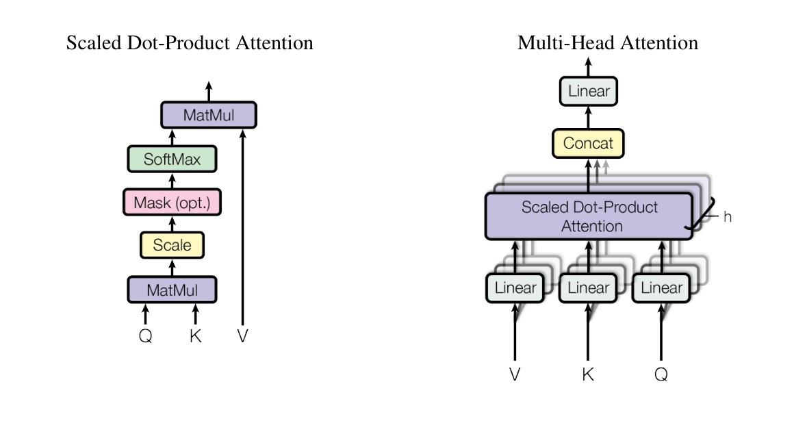
Figure 2 of the paper. Read it bottom-up: MatMul → Scale → Mask → SoftMax → MatMul. Each box is one line of code.
Level 4 · step 3 · figure 2 (left) → code
def attention(q, k, v, mask=None):
d_k = q.size(-1)
scores = q @ k.transpose(-2, -1) # MatMul
scores = scores / math.sqrt(d_k) # Scale
if mask is not None: # Mask (opt.)
scores = scores.masked_fill(~mask, float("-inf"))
weights = scores.softmax(dim=-1) # SoftMax
return weights @ v, weights # MatMul
k.transpose(-2, -1), not k.T: the tensors will be 4-D (batch, heads, L, dk).Lab 7B checks your function against PyTorch's own F.scaled_dot_product_attention and gives a specific hint for each classic mistake.
Level 4 · step 4 · live demo
Self-attention weights for "the cat sat on the mat" (Q = K = V = hand-made 4-number embeddings, as in Lab 7B). Click a row.
Click a row of the matrix.
Why ÷√dk? Random q and 8 keys with dk numbers each:
Level 4 · step 5 · §3.2.2
\[ \mathrm{MultiHead}(Q,K,V) = \mathrm{Concat}(\mathrm{head}_1,\dots,\mathrm{head}_h)\,W^O \]
B, L, D = x.shape # e.g. (2, 10, 512), h = 8
q = self.w_q(x) # (B, L, 512) one Linear for all heads
q = q.view(B, L, h, D // h) # (B, L, 8, 64)
q = q.transpose(1, 2) # (B, 8, L, 64) heads = extra batch axis
# … same for k, v …
out, w = attention(q, k, v, mask) # (B, 8, L, 64)
out = out.transpose(1, 2).reshape(B, L, D) # undo: (B, L, 512)
return self.w_o(out) # W^O
Each head can learn a different relation: one finds the subject of a verb, one the previous word, one the word "it" refers to.
Paper's base model: dmodel = 512, h = 8, dk = dv = 512/8 = 64. Same cost as one head of size 512.
Classic bug (Lab 7G, bug 4): q.view(B, h, L, d_k) directly. The shape is right but tokens and heads are mixed. Always view then transpose.
Lab 7B: copy PyTorch's weights into your class; outputs must equal nn.MultiheadAttention.
Level 4 · step 6 · §3.5 · live demo
Attention sees a set, not a sequence: "dog bites man" = "man bites dog". So the paper adds a pattern to every word's embedding:
\[ \begin{aligned} PE_{(pos,\,2i)} &= \sin\big(pos / 10000^{2i/d}\big) \\ PE_{(pos,\,2i+1)} &= \cos\big(pos / 10000^{2i/d}\big) \end{aligned} \]
pos = torch.arange(L).unsqueeze(1) # (L, 1)
two_i = torch.arange(0, d, 2) # 0, 2, 4, …
div = 10000 ** (two_i / d)
pe[:, 0::2] = torch.sin(pos / div) # even dims
pe[:, 1::2] = torch.cos(pos / div) # odd dims
Clock analogy: low dimensions are the seconds hand (fast), high dimensions the hour hand (slow). Together they give every position a unique "time".
Move the mouse over the picture.
Level 4 · step 7 · Figure 1
| Box in Figure 1 | What it is |
|---|---|
| Input / Output Embedding | nn.Embedding(vocab, 512) × √dmodel |
| Positional Encoding ⊕ | add the sin/cos pattern |
| Multi-Head Attention | encoder self-attention |
| Masked Multi-Head Attention | decoder self-attention + causal mask |
| Multi-Head Attention (decoder, middle) | cross-attention: Q from decoder, K, V from encoder |
| Feed Forward | Linear(512→2048) → ReLU → Linear(2048→512) |
| Add & Norm | LayerNorm(x + Sublayer(x)) |
| N× | stack N = 6 identical layers |
| Linear + Softmax | scores over the output vocabulary |
Base model: N = 6, dmodel = 512, h = 8, dff = 2048, dropout 0.1 → 65 M parameters (Table 3).
Level 4 · step 8 · Lab 7C
class EncoderLayer(nn.Module):
def __init__(self, d_model, n_heads, d_ff, dropout=0.1):
super().__init__()
self.self_attn = MultiHeadAttention(d_model, n_heads, dropout)
self.ffn = FeedForward(d_model, d_ff, dropout)
self.norm1, self.norm2 = LayerNorm(d_model), LayerNorm(d_model)
self.drop = nn.Dropout(dropout)
def forward(self, x, src_mask): # "LayerNorm(x + Sublayer(x))"
x = self.norm1(x + self.drop(self.self_attn(x, x, x, src_mask)))
x = self.norm2(x + self.drop(self.ffn(x)))
return x
class DecoderLayer(nn.Module):
...
def forward(self, y, memory, src_mask, tgt_mask):
y = self.norm1(y + self.drop(self.self_attn(y, y, y, tgt_mask))) # masked
y = self.norm2(y + self.drop(self.cross_attn(y, memory, memory, src_mask)))
y = self.norm3(y + self.drop(self.ffn(y)))
return y
# Transformer.forward(src, tgt):
# memory = encoder(embed(src) + PE)
# return linear(decoder(embed(tgt) + PE, memory)) # (B, L_tgt, vocab)
Level 4 · step 9 · the experiment
src : 3 7 1 9 5 2 8 4
tgt_in : BOS 4 8 2 5 9 1 7 3 (teacher forcing:
tgt_out : 4 8 2 5 9 1 7 3 EOS shifted by one)
🖐 Predict first: remove the positional encoding and retrain. What accuracy? (Lab 7C, Your turn 1.)
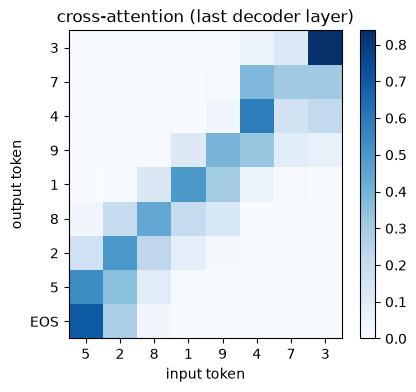
The trained model's cross-attention: output token i looks at input token L − 1 − i, an anti-diagonal. Nobody programmed this; it was learned.
Answer out loud, then click
5
Paper 2: U-Net
Level 5 · Ronneberger, Fischer & Brox, MICCAI 2015 · segmentation with very little data · Lab 7D
Level 5 · step 1 · Figure 1
Analogy: the left side zooms out to understand the scene; the right side zooms back in to draw the outline, copying the fine details from the left side through the skip connections.
Level 5 · step 2 · live demo
Level 5 · step 3 · paper → code
class DoubleConvValid(nn.Module): # 2 × [3×3 conv (unpadded), ReLU]
def __init__(self, cin, cout):
super().__init__()
self.net = nn.Sequential(nn.Conv2d(cin, cout, 3), nn.ReLU(inplace=True),
nn.Conv2d(cout, cout, 3), nn.ReLU(inplace=True))
def forward(self, x):
return self.net(x)
def center_crop(x, size): # "copy and crop"
t = (x.shape[-1] - size) // 2
return x[..., t:t + size, t:t + size]
class UNetPaper(nn.Module):
def __init__(self, in_ch=1, n_classes=2):
super().__init__()
ch = [64, 128, 256, 512, 1024]
self.downs = nn.ModuleList([DoubleConvValid(([in_ch] + ch)[i], ch[i]) for i in range(5)])
self.pool = nn.MaxPool2d(2)
self.ups = nn.ModuleList([nn.ConvTranspose2d(ch[i], ch[i-1], 2, stride=2) for i in (4, 3, 2, 1)])
self.up_convs = nn.ModuleList([DoubleConvValid(ch[i], ch[i-1]) for i in (4, 3, 2, 1)])
self.head = nn.Conv2d(64, n_classes, 1) # 1×1 conv
def forward(self, x):
skips = []
for i, down in enumerate(self.downs): # contracting path
x = down(x)
if i < 4:
skips.append(x)
x = self.pool(x)
for up, conv, skip in zip(self.ups, self.up_convs, reversed(skips)):
x = up(x) # expansive path
x = conv(torch.cat([center_crop(skip, x.shape[-1]), x], dim=1))
return self.head(x)
✅ Lab 7D checks: 572² → 388², 31 030 658 parameters, and you can count the paper's "23 convolutional layers" in trace_shapes.
| 2015 paper | Today |
|---|---|
| unpadded convs + crop | padding=1, no crop |
| no normalisation | BatchNorm after each conv |
| 64 … 1024 channels | base 16–64 |
| overlap-tile for big images | whole image at once |
Idea unchanged since 2015: encoder, decoder, skip connections. nnU-Net (2021) is still the medical benchmark winner.
Level 5 · step 4 · the experiment
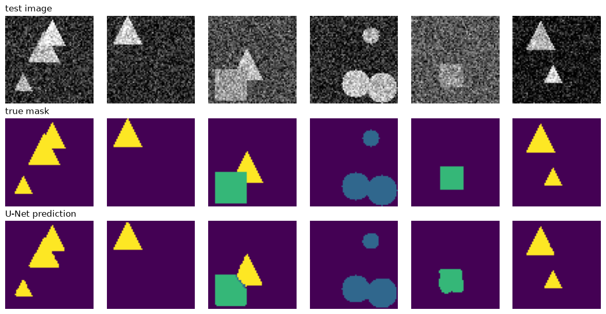
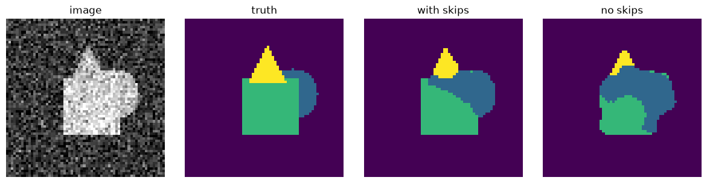
Answer out loud, then click
6
Paper 3: ResNet
Level 6 · He, Zhang, Ren & Sun, CVPR 2016 (Best Paper) · why deeper was worse, and the fix · Lab 7E
Level 6 · step 1 · Figure 1
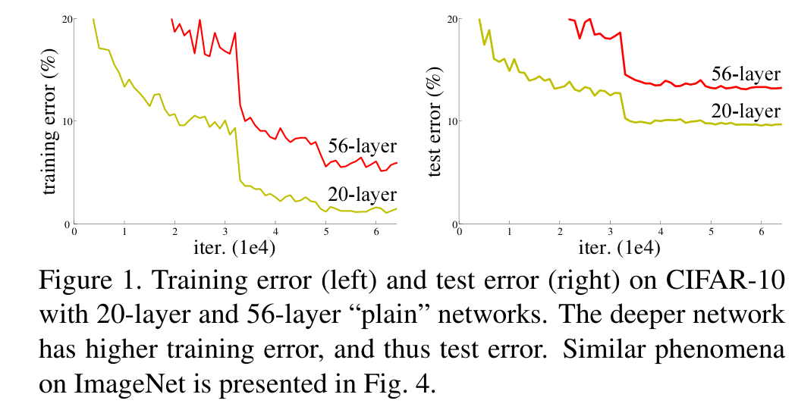
Paper, Figure 1 (CIFAR-10): the 56-layer plain net has higher training and test error than the 20-layer one.
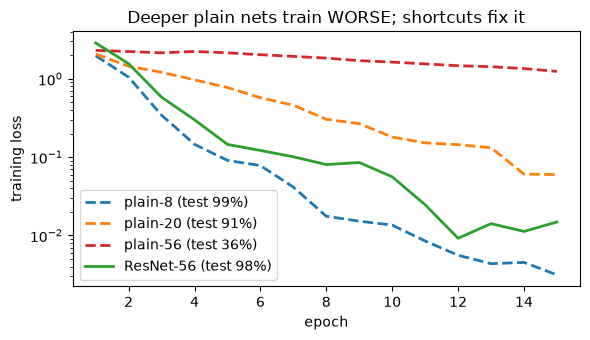
Our reproduction in Lab 7E (8 × 8 digits, 1 min on CPU): plain-56 stays at 36 % test accuracy; with shortcuts, ResNet-56 reaches 98 %.
Why is this strange? A 56-layer net could copy the 20-layer net and make the other 36 layers do nothing (identity). So it should be at least as good. It isn't: plain layers find it hard to learn "do nothing". This is not overfitting (training error is higher too).
Level 6 · step 2 · Figure 2
\[ y = \mathcal{F}(x, \{W_i\}) + x \]
If the best thing a block can do is nothing, it only has to push F(x) to 0: easy. Gradients also flow straight through the "+ x" path to early layers.
Analogy: editing an essay is easier than rewriting it. Each block makes a small edit to x instead of producing a whole new x.
class BasicBlock(nn.Module):
def __init__(self, cin, cout, stride=1):
super().__init__()
self.conv1 = nn.Conv2d(cin, cout, 3, stride, 1, bias=False)
self.bn1 = nn.BatchNorm2d(cout)
self.conv2 = nn.Conv2d(cout, cout, 3, 1, 1, bias=False)
self.bn2 = nn.BatchNorm2d(cout)
self.relu = nn.ReLU(inplace=True)
self.downsample = None # identity shortcut
if stride != 1 or cin != cout: # projection shortcut
self.downsample = nn.Sequential( # (option B, §3.3)
nn.Conv2d(cin, cout, 1, stride, bias=False),
nn.BatchNorm2d(cout))
def forward(self, x):
identity = x if self.downsample is None else self.downsample(x)
out = self.relu(self.bn1(self.conv1(x)))
out = self.bn2(self.conv2(out))
return self.relu(out + identity) # ReLU AFTER the add
Level 6 · step 3 · Table 1
| stage | size | ResNet-18 | ResNet-34 | ResNet-50 |
|---|---|---|---|---|
| conv1 | 112² | 7 × 7, 64, stride 2 · then 3 × 3 max-pool | ||
| conv2_x | 56² | 2 blocks | 3 | 3 bottlenecks |
| conv3_x | 28² | 2 | 4 | 4 |
| conv4_x | 14² | 2 | 6 | 6 |
| conv5_x | 7² | 2 | 3 | 3 |
| parameters | 11 689 512 | 21 797 672 | 25 557 032 | |
Lab 7E checks your counts against torchvision to the last parameter.
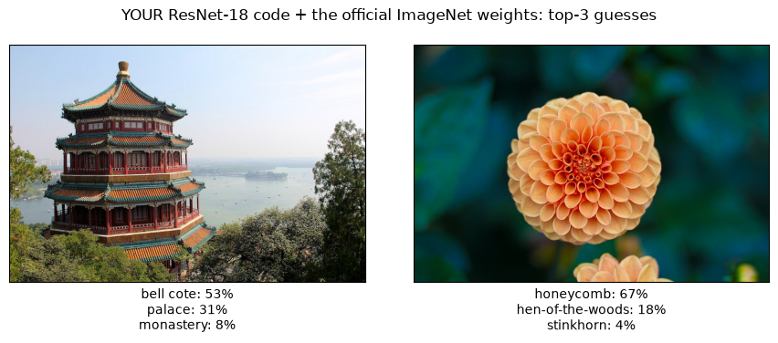
Ultimate test: load the official ImageNet weights into your class with strict=True. If a single name or shape differs, it fails. It works, so your code is ResNet-18.
Answer out loud, then click
bias=False?7
Paper 4: An Image is Worth 16×16 Words
Level 7 · Dosovitskiy et al., ICLR 2021 · the Vision Transformer (ViT) · Lab 7F
Level 7 · step 1 · Figure 1, Eq. 1–4
| Eq. | Formula | In plain words | Code |
|---|---|---|---|
| 1 | z₀ = [xclass; xp¹E; …; xpNE] + Epos | patches → vectors, add a [class] token in front, add learned positions | Conv2d(3, D, 16, stride=16), cat, + pos_embed |
| 2 | z′ = MSA(LN(z)) + z | attention, pre-norm, residual | x = x + attn(norm1(x)) |
| 3 | z = MLP(LN(z′)) + z′ | MLP (GELU), pre-norm, residual | x = x + mlp(norm2(x)) |
| 4 | y = LN(zL⁰) | the final [class] token is the image summary | head(norm(x)[:, 0]) |
Level 7 · step 2 · live demo
🖐 Think: press shuffle. Without position embeddings, ViT sees exactly this jumble (a "bag of patches"). Lab 7F: removing them drops our tiny ViT from 98.6 % to 80.5 %.
Level 7 · step 3 · paper → code
class PatchEmbedding(nn.Module): # "linear projection of flattened patches"
def __init__(self, img_size, patch, in_ch, dim):
super().__init__()
self.n_patches = (img_size // patch) ** 2
self.proj = nn.Conv2d(in_ch, dim, kernel_size=patch, stride=patch)
def forward(self, x): # (B, 3, 224, 224)
return self.proj(x).flatten(2).transpose(1, 2) # (B, 196, 768)
class ViT(nn.Module):
def __init__(self, img_size=224, patch=16, in_ch=3, n_classes=1000,
dim=768, depth=12, heads=12, mlp_dim=3072, dropout=0.0):
super().__init__()
self.patch_embed = PatchEmbedding(img_size, patch, in_ch, dim)
n = self.patch_embed.n_patches
self.cls_token = nn.Parameter(torch.zeros(1, 1, dim))
self.pos_embed = nn.Parameter(torch.randn(1, n + 1, dim) * 0.02)
self.blocks = nn.Sequential(*[EncoderBlock(dim, heads, mlp_dim, dropout)
for _ in range(depth)])
self.norm = nn.LayerNorm(dim, eps=1e-6)
self.head = nn.Linear(dim, n_classes)
def forward(self, x):
x = self.patch_embed(x) # Eq. 1
x = torch.cat([self.cls_token.expand(x.size(0), -1, -1), x], 1) + self.pos_embed
x = self.blocks(x) # Eq. 2–3
return self.head(self.norm(x)[:, 0]) # Eq. 4
✅ Lab 7F: ViT() has 86 567 656 parameters, identical to torchvision.models.vit_b_16() (the paper's "ViT-Base, 86M").
A 16 × 16 conv with stride 16 is a linear layer on flattened patches: each output position sees one patch, no overlap. Lab 7F proves it numerically.
Tiny ViT on 8 × 8 digits (2 × 2 patches, 16 tokens, D = 64, 4 blocks): 98.6 % test accuracy in ≈ 40 s on CPU.
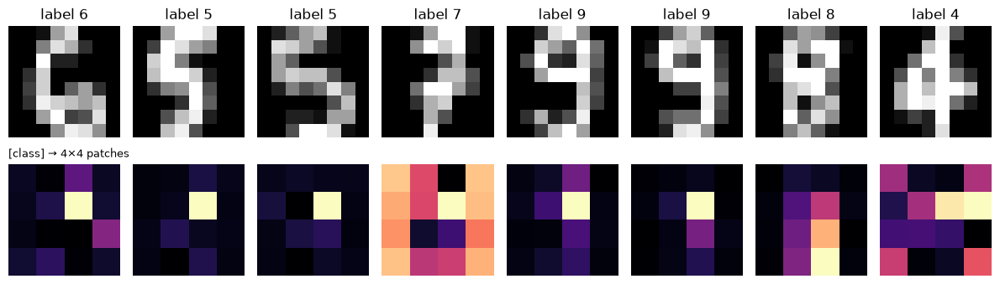
Level 7 · step 4 · what the paper found
Practical rule: small data and no pre-training → CNN. Pre-trained ViT available (most are, on Hugging Face) → fine-tune the ViT. Lecture 4's SmolVLM and SAM use ViT encoders for exactly this reason.
Answer out loud, then click
8
Advanced: your next paper and your own research
Level 8 · a menu of vision papers, the bug hunt, the Paper Implementation Challenge, from implementing to research
Level 8 · step 1 · choose your next paper
| Paper | Year | You learn | Difficulty | Colab? |
|---|---|---|---|---|
| SE-Net (worked example in 7H) | 2018 | channel attention, plug-in modules | ★☆☆ | CPU |
| MobileNetV2 | 2018 | depthwise separable convs, inverted residuals: Raspberry Pi-friendly | ★☆☆ | CPU/GPU |
| VGG · BatchNorm | 2014–15 | depth with 3 × 3 convs · normalisation from the equations | ★☆☆ | GPU |
| YOLO v1 | 2016 | detection as regression: grid, boxes, the YOLO loss | ★★☆ | GPU |
| DCGAN | 2016 | generator vs discriminator: generate faces/digits | ★★☆ | GPU |
| DDPM (diffusion) | 2020 | how image generators work; uses your U-Net! | ★★☆ | GPU |
| CLIP | 2021 | images + text in one space; contrastive loss; zero-shot | ★★☆ | GPU |
| DETR | 2020 | detection with a Transformer + Hungarian matching (RF-DETR's ancestor) | ★★★ | GPU |
| NeRF | 2020 | 3-D scenes from photos; volume rendering (uses Lecture 6's cameras) | ★★★ | GPU |
| Swin · MAE · SAM | 2021–23 | windowed attention · masked pre-training · promptable segmentation | ★★★ | GPU |
More: FCN · Mask R-CNN · SimCLR · ConvNeXt · DINOv2 · 3D Gaussian Splatting · Neuralangelo · SAM 2
Level 8 · step 2 · Lab 7G, in pairs
| # | Paper | Bug (no error message!) |
|---|---|---|
| 1 | Transformer | divides by dk instead of √dk |
| 2 | Transformer | softmax over the wrong axis |
| 3 | Transformer | causal mask hides the token itself |
| 4 | Transformer | heads split with view only |
| 5 | U-Net | skip concatenated on the wrong axis |
| 6 | ResNet | no projection shortcut, ReLU before add |
| 7 | ViT | patches cut as stripes (reshape only) |
| 8 | any | missing zero_grad() |
Rules: one reads the paper/slide, one edits the code; swap after every bug. Change as little as possible. Each fix has its own ✅ check and there is a scoreboard to 8/8.
For every bug, write: what was wrong · how you found it · which habit (Level 3) would have caught it. That list becomes your personal debugging checklist.
▶︎ Lab 7G in ColabLevel 8 · step 3 · your project
Transformer (7B + 7C), U-Net (7D), and ResNet (7E) or ViT (7F). Each with a paper card, a shape table, all ✅ checks and the "Your turn" experiments.
Bronze + both ResNet and ViT, or Bronze + one ★☆☆ / ★★☆ paper from the menu, done with the Lab 7H template.
All four lab papers + one menu paper rated ★★☆ or ★★★ (YOLO v1, DDPM, CLIP, DETR, NeRF…), with an ablation and a reproduction report.
| For every paper, hand in | Marks |
|---|---|
| Paper card + shape table + equations → code table (your own words) | 20 % |
| Correct implementation: tests / ✅ checks / parameter counts / overfit-one-batch | 30 % |
| Small experiment + one ablation, with a table or plot (several seeds where possible) | 25 % |
| Reproduction report: what matched, what didn't and why, AI-use declaration | 15 % |
| Clean code (functions/classes, comments that cite the paper's equations) | 10 % |
Plus a 3-minute viva: explain any line of your code. Template: Lab 7H · details on the labs page.
Level 8 · step 4
In the Lab 7H worked example our small test does not show SE-Net's improvement: the difference is inside the seed-to-seed noise. Saying so, and explaining why (tiny data, 8 × 8 images), earns full marks. Hiding it or running seeds until it "works" is cheating.
The parameter count matched the paper exactly (+2.53 M, +9.9 %). Report what matched too: it shows your implementation is right.
Level 8 · step 5
Level 8 · step 6
| Step | You | AI assistant (Cursor, Claude, Copilot, Gemini) |
|---|---|---|
| Understand | read the paper, write the card | explains terms and equations |
| Specify | shape table, tests, parameter counts | reviews your table |
| Code | write the core (Lab 7); later, supervise | boilerplate: data loading, plotting, logging |
| Verify | checks vs paper and reference | suggests where a bug may be |
| Conclude | experiments, judgement, report | proof-reads |
"Don't just learn to code, learn to solve problems." AI agents now write a lot of the code. What they cannot do for you: know what the paper really says, design the test that catches a silent bug, and decide whether a result is believable.
AI-generated implementations of papers often contain exactly the bugs of Lab 7G (wrong softmax axis, view without transpose). They run, look plausible, and are wrong. The person who can check them is valuable.
Stay ahead: paper reading + PyTorch + testing + an AI assistant you know how to direct. That combination is what employers and MSc supervisors look for in 2026.
I don't understand the maths in the paper. Can I still implement it?
Yes. Most vision papers need matrix multiplication and a few functions (softmax, sigmoid). Translate one symbol at a time into a tensor with a shape; the code often makes the maths clear.
Do I need a GPU?
Not for Lab 7 (all CPU, minutes). For menu papers use Colab's free T4 and shrink the data/model first.
The official code differs from the paper. Which is right?
For reproducing results, the code. Note the difference in your report: it is a finding.
My numbers are lower than the paper's.
Expected: they trained bigger models, longer, on more data. Compare trends (does the ablation hurt? does depth help?), not absolute numbers.
Can I use code from GitHub?
To check details after trying yourself: yes, cite it. Copying it as your implementation: no, and the viva will show it.
How long does one paper take?
Lab-sized papers: 2–4 hours. A ★★☆ menu paper: about a week of evenings. That is normal, even for professionals.
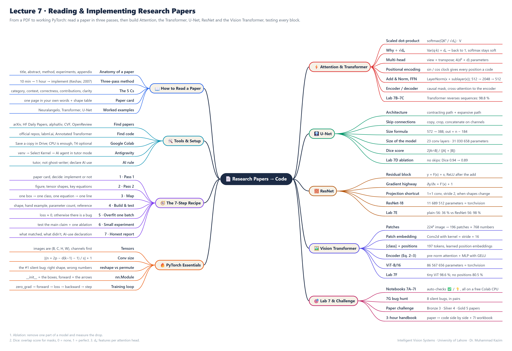
Click to zoom · open the mind map page · download PNG
Practise it all, interactively: Paper ↔ Code handbook. Paper figures and equations linked to the code, live widgets for every paper, the AI-era workflow and quick checks.
Next: the Paper Implementation Challenge (3–5 papers). Later lectures use these models directly: segmentation (U-Net), detection (DETR/YOLO) and ViT-based foundation models.
The four papers: Vaswani et al., Attention Is All You Need, NeurIPS 2017 · Ronneberger et al., U-Net, MICCAI 2015 · He et al., Deep Residual Learning, CVPR 2016 · Dosovitskiy et al., An Image is Worth 16x16 Words, ICLR 2021 · Hu et al., Squeeze-and-Excitation Networks, CVPR 2018.
Reading: Keshav, How to Read a Paper · The Annotated Transformer · The Illustrated Transformer · d2l.ai ch. 8, 11 · labml.ai · 101-transformers · HF Daily Papers · alphaXiv.
Credits. Paper figures and first pages are reproduced from the arXiv versions of the cited papers for teaching and commentary; © their authors. Photos in the ResNet slide: scikit-learn sample images by danielbuechele and vultilion (Flickr, CC BY 2.0); road photo: Udacity CarND (MIT). All other figures were generated by the Lab 7 notebooks.
Questions?
Next: Lab 7. Start with 7A in Colab, then build the Transformer, U-Net, ResNet and ViT yourself.
Intelligent Vision Systems; University of Lahore | Dr. Muhammad Kazim